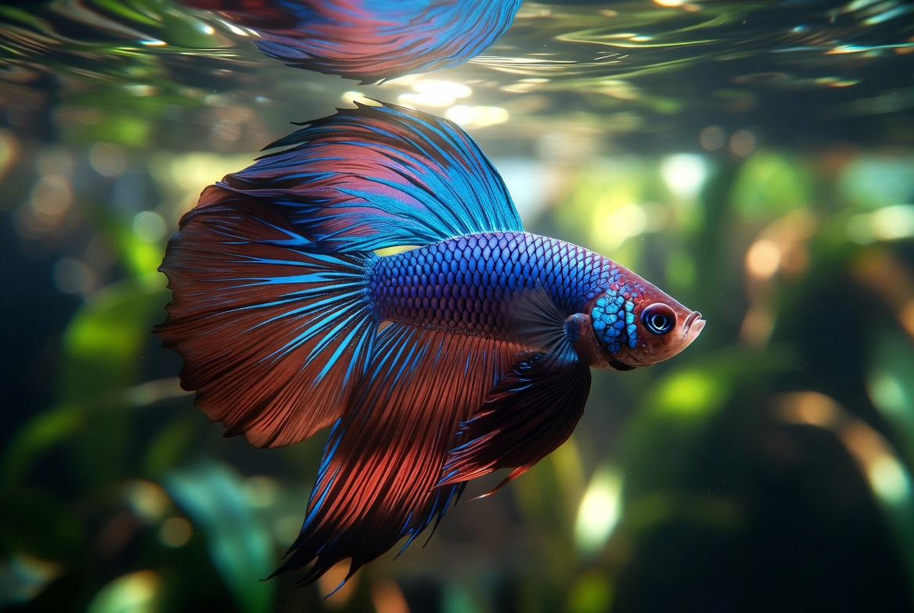

Betta Fish · Betta splendens
A complete, checked-fact printable manual: tank and equipment, the water numbers that actually matter, health triage, and the routines that keep a betta thriving for its full lifespan.

Contents
Every page is written to be used, not just read once.
Getting Started
Section 01 · Quick Profile
Section 02 · Full Care Guide
Section 03 · Health & Common Issues
Section 04 · Quick Reference
Section 05 · Owner Tools
Reference
Start here
Three ways to get value from it, depending on where you are right now.
Read pages 4 through 9 in order before buying a fish. The tank, the heater, and the cycle are decisions that are hard to undo once a betta is already living in the water, and cycling takes 4 to 6 weeks on its own. Buy the tank first and the fish last, then use the Budget & Shopping List on page 16.
Jump to the Setup Checklist and Water Targets on page 14 to audit what you have, and the Health Red Flags section starting on page 10 if anything seems off. If your betta is visibly unwell right now, test the water before you buy medication. Page 10 explains why that order almost never changes.
Why this package exists
Almost everything sold alongside a betta, the bowl, the unheated kit, the mirror, comes from an outdated picture of the species. This package reflects current standards for tank size, heating, and filtration, plus the peer-reviewed welfare research on page 9, cross-checked against veterinary and aquarium sources rather than the packaging.
Not a substitute for
An aquatic veterinarian. They are rarer than reptile or small-animal vets, and most betta problems are corrected through water quality rather than treatment, but genuinely serious or unclear cases are still a vet call, not a page in this book.
Section 01
Everything at a glance before you read the detail.
| Scientific name | Betta splendens, the Siamese fighting fish |
| Adult size | 2.5 to 3 in (6 to 7.5 cm), fins included |
| Captive lifespan | 2 to 4 years, up to 5 with excellent water quality |
| Native range | Shallow rice paddies, floodplains, and slow streams, Southeast Asia |
| Diet type | Obligate carnivore; a surface ambush feeder in the wild |
| Tank minimum (one betta) | 5 gallons, heated, gently filtered, and lidded |
| Handling difficulty | Beginner; observation only, never bare hands |
| Conservation status | Vulnerable (IUCN), for wild populations |
$100 to $300 for tank, heater, filter, decor, conditioner, and a liquid test kit. The fish itself is $5 to $30, up to about $55 for rare varieties.
$20 to $30 for food, water conditioner, and the electricity to run a heater and filter continuously. Most owners spend $100 to $250 a year.
Where the money actually goes
Food is almost never the expensive part. A betta eats a few pellets a day, and food often runs $30 to $50 for an entire year. The real recurring cost is running a heater around the clock, which is exactly the item the cheap bowl-and-fish kit leaves out.
Section 02 · Full Care Guide
Five gallons is the current standard minimum for one betta, and bigger is genuinely easier rather than just more generous: temperature and water chemistry swing less in more water, which means fewer sudden stresses on the fish. Use a lid, bettas are surprisingly good jumpers. The three pieces of equipment below are the setup. Everything else is decor.
Never
Keep a betta in an unheated, unfiltered bowl. This is a tropical fish, and cold water suppresses immune function and digestion. The bowl is the single most common cause of the problems in Section 03.
Section 02 · Full Care Guide
| Parameter | Target | Why it matters |
|---|---|---|
| Temperature | 78 to 80°F | Tropical fish; cold water suppresses immune function and digestion |
| Acceptable temperature band | 76 to 82°F | Stability beats hitting an exact number; avoid rapid swings |
| pH | 6.5 to 7.5 | Wide tolerance, up to about 7.8; stability matters more than the value |
| Ammonia | 0 ppm | Even 0.25 ppm causes gill damage; any reading is an emergency |
| Nitrite | 0 ppm | Blocks oxygen uptake in the blood; toxic at any measurable level |
| Nitrate | Under 20 ppm | Byproduct of a healthy cycle; controlled with regular water changes |
Ammonia and nitrite have a target of zero, not "low." Unlike temperature or pH there is no safe nonzero baseline for either, and a cycled, established tank reads exactly 0 ppm for both, consistently. If either shows a reading, that is the problem, whatever else the fish looks like.
Not paper strips, which are notoriously imprecise. A liquid-reagent kit is the only reliable way to know whether a tank is cycled before a fish goes in, and it is a one-time, reusable purchase.
Use a dechlorinator rated for chlorine and chloramine. Many municipal systems use chloramine specifically because it doesn't evaporate off, so a chlorine-only product won't fully neutralize it.
Less than the five above, but it is not irrelevant. GH measures dissolved minerals; KH measures the water's ability to resist pH swings. Bettas tolerate a wide range of both, but very soft, poorly buffered water, common with reverse-osmosis or heavily filtered tap water, can let pH crash suddenly after a water change. That is far more stressful than a stable pH slightly outside the ideal band. If low KH shows up alongside unstable pH between water changes, a small consistent dose of a buffering product fixes it. Get ammonia, nitrite, and temperature right first.
The one number people treat as optional
Temperature. It gets read as decor rather than chemistry, but cold water slows a betta's metabolism and immune response, which means it takes longer to recover from even minor ammonia or nitrite exposure. A heater holding a steady 78 to 80°F is what makes every other parameter on this page more forgiving.
Section 02 · Full Care Guide
You are not just diluting mess when you change water, you are managing a nitrogen cycle. Beneficial bacteria convert toxic ammonia from waste and uneaten food into nitrite, then into far less harmful nitrate. In an uncycled tank those colonies don't exist yet, and ammonia has nowhere to go but up. This is why bettas so often decline in the first two weeks of a brand new tank: it looks clean, but the biological filtration hasn't established.
| Stage | What you see | What to do |
|---|---|---|
| Week 1 to 2 | Ammonia rises | Keep dosing an ammonia source; test every 1 to 2 days |
| Week 2 to 4 | Ammonia falls, nitrite spikes | Keep testing; do not add the fish yet |
| Week 4 to 6 | Nitrite falls, nitrate appears | Cycle is finishing; confirm before adding the fish |
| Ready | Ammonia and nitrite both 0 for a full week | Water change, then add the betta |
The whole process typically takes 4 to 6 weeks without a fish in the tank, which is why buying the tank weeks before the fish is the single best decision in this package.
A 20 to 30% water change weekly, using a gravel vacuum to pull waste out of the substrate. Partial is the point: a full change strips out the beneficial bacteria that keeps the tank stable and effectively restarts the cycle. Match the new water's temperature before it goes in, and treat it with conditioner first, not after.
Never rinse filter media under the tap
The bacteria colony lives on it, and chlorinated tap water kills it. Rinse sponge or bio-media in a bucket of old tank water pulled during the water change, and never replace all the media at once.
What causes a spike in a tank that was previously fine: overfeeding, over-cleaning the filter, or a sudden jump in bioload such as adding another fish without re-cycling.
Section 02 · Full Care Guide
Bettas are obligate carnivores and surface ambush feeders, taking insects, larvae, and small crustaceans off the water's surface in the wild. Overfeeding, not underfeeding, is the far more common mistake in captivity.
| Stage | Frequency | Portion |
|---|---|---|
| Adult | Once or twice daily, plus one fasting day a week | 2 to 4 pellets per meal, or whatever clears in about 60 seconds |
| Juvenile | 2 to 3 times daily | Smaller portions, same 60-second rule |
| Fry, weeks 3 to 4 | 3 to 4 times daily | Small meals, dropping in frequency as they grow |
| Fry, free-swimming | 4 to 5 small meals daily | Infusoria first, then progressively larger foods |
The portion rule worth memorizing
A betta's stomach is roughly the size of its own eyeball. That is the actual basis for the standard "2 to 4 pellets" guidance, and it is why a fish that looks eager for more is not necessarily a fish that needs more.
A betta-specific high-protein pellet, not tropical flakes or goldfish pellets, which carry the wrong nutrient profile and more filler. Look for dried brine shrimp, krill, or fish meal near the top of the ingredient list, and roughly 30% protein or higher. Pre-soak pellets that expand in water.
Frozen, freeze-dried, or live bloodworms, brine shrimp, daphnia, tubifex worms, mysis shrimp, and mosquito larvae. Bloodworms are rich enough to limit to 1 to 2 times a week, 1 to 2 worms per meal. Rehydrate freeze-dried food first, feeding it dry raises constipation risk.
Never feed
Bread, onion, garlic, salt, sugary foods, processed meats, citrus, or dairy. Bread swells and adds nothing; onion and garlic carry toxic sulfur compounds; citrus is acidic enough to crash tank pH and burn gills; bettas are effectively lactose intolerant. General tropical flakes are not an appropriate staple either.
Uneaten food breaks down into ammonia, which is the most common cause of a spike in a tank that was previously stable. Net out anything left after a few minutes. A blanched, shelled pea now and then works as a constipation remedy, but it is a remedy, not a regular food.
Section 02 · Full Care Guide
Bettas are the best-studied fish in the hobby
One study in Animal Welfare found that space and environmental enrichment both affect behavior in Betta splendens, with restricted space raising hiding and inactivity. A second examined tank size and furnishings. A third found fish in aquaria planted with Sagittaria subulata showed the longest average active swimming time and fewer negative behaviors. Cover makes a betta more willing to use open water, not less.
Decided before anything goes in it. Larger tanks promoted natural, active behavior in the space research; restricted conditions produced the hiding and inactivity pattern.
Bettas are labyrinth fish and surface breathers. Broad-leaved plants and a leaf hammock give them somewhere to rest near the air they actually use.
Driftwood releases tannins, softening the light and moving the tank closer to the blackwater conditions the species comes from.
Live planting works on two axes, cover plus water quality and microbial community. If you use artificial plants, choose soft ones; stiff plastic tears fins.
Move the feeding point around rather than dropping food in the same corner daily, and vary the food itself. The cheapest item on this list.
Researchers use the mirror-image test to provoke a threat display so they can measure the stress response afterward. It is a stress test, not a toy.
Section 03 · Health & Common Issues
What to watch for, and what to check before you medicate.
Act today if you see
Any detectable ammonia or nitrite reading · raised, pinecone-like scales · a fine gold or rust dusty sheen over the body · white grains across the body and fins with scratching · fins going ragged or discolored · gasping at the surface beyond normal air-gulping · sudden loss of color with clamped fins · refusal to eat past 5 to 7 days
Almost every common betta illness traces back to water quality or water temperature, which is genuinely good news: the first response to a sick betta is nearly always the same. Test ammonia, nitrite, nitrate, and temperature before you buy a single medication. A large share of what looks like disease is a chemistry problem the fish is reacting to, and medicating on top of bad water treats the symptom while the cause keeps running.
| Normal | Concerning |
|---|---|
| Gulping air at the surface, a labyrinth fish doing what it evolved to do | Gasping at the surface constantly, especially with rapid gill movement |
| Resting on a leaf or the substrate after lights out | Lying on the bottom during the day with clamped fins and faded color |
| Building and repairing a bubble nest with no female present | Sudden loss of interest in food and surroundings over a day or two |
| Flaring briefly at a reflection or a passing shadow | Continuous flaring with no let-up, usually a mirror or a tankmate problem |
Section 03 · Health & Common Issues
Cause: a bacterial infection, almost always following poor water quality, physical fin damage from sharp decor or strong current, or prolonged stress. Signs: frayed, ragged, or discolored fin edges that recede over days. Response: clean water first, then aquarium salt for mild cases, adding antibiotics if it is more advanced or not improving. Recovery: fins regrow once the water is right, though regrowth can come back a slightly different color. Fin rot that keeps returning is a water quality problem, not a treatment problem.
Cause: the parasite Ichthyophthirius multifiliis, usually introduced on new fish, plants, or water. Signs: small white grains scattered across the body and fins, plus scratching against decor. Response: gradually raise the tank temperature, which speeds the parasite's life cycle into the stage that treatment can reach, alongside a copper or formalin-based medication. An adjustable heater makes the temperature change controllable, which is the part people get wrong.
Cause: Oodinium, a parasite. Signs: a fine gold or rust-colored dusty sheen over the body, often easiest to see with a flashlight at an angle, alongside clamped fins and lethargy. Response: darken the tank, since the parasite is partly light-dependent, and use an antiparasitic or copper treatment. Urgency: this one moves fast and can be fatal quickly, so early treatment matters more here than anywhere else on this page.
Quarantine is cheaper than treatment
Ich and velvet are introduced, not spontaneous. A quarantine period for any new fish, and a rinse and inspection for new plants, prevents most of what this page describes. If you keep more than one tank, keep separate nets and equipment.
The common thread
All three take hold far more easily in a fish whose immune system is already suppressed by cold water or ammonia exposure. A stable, heated, cycled tank is not a guarantee, but it is the difference between an exposure and an infection.
Section 03 · Health & Common Issues
Cause: usually overfeeding, constipation, or infection, and occasionally a rapid temperature drop. Signs: buoyancy problems, floating at the surface, sinking to the bottom, or swimming at odd angles. Response: fast the fish for 2 to 3 days, which resolves many mild cases, then offer a single cooked, de-shelled pea to help things move along. Prevention: the portion rule on page 8. This is the condition most directly caused by feeding too much.
What it is: not really a single disease. Raised, pinecone-like scales are the visible result of fluid building up inside the fish from organ failure. Signs: the pinecone look, usually clearest viewed from above, alongside a swollen belly and lethargy. Reality check: by the time that sign appears the underlying problem is usually advanced, and the prognosis is often poor. Treat the tank conditions, keep the fish comfortable, and be realistic about the outcome.
Cause: the bacterium Flavobacterium columnare, notable for being highly contagious between fish. Signs: pale, fuzzy or saddle-shaped patches, often around the mouth or along the back, with rapid progression. Response: antibacterial treatment and isolation. If you keep more than one tank, do not share nets, siphons, or hands between them without washing.
Mycobacteriosis, worth knowing about
Fish tuberculosis is rare, but it is zoonotic, transmissible to people through contact with infected water, especially through broken skin. Wear gloves for tank maintenance if you have open cuts, and particularly on a tank where something unexplained is going wrong.
Before you reach for medication
Test and correct water quality and temperature. A huge share of betta illness resolves, or never happens at all, from keeping the tank properly heated, filtered, and on a consistent water-change schedule. Aquatic vets exist for genuinely serious or unclear cases, but they are the exception rather than the norm in betta care.
Section 03 · Health & Common Issues
You do not handle this fish. A betta's slime coat is an active barrier against infection and parasites, and bare hands strip it away on contact, so moves happen by net or cup only. That makes reading condition from a distance the real skill. Stress signs: lethargy, fins clamped tightly against the body, faded color, loss of appetite, hiding, and rapid gill movement. Almost all of them trace back to water quality or a temperature that has drifted, not to anything you did by hand. A healthy betta shows vibrant color, intact flowing fins, normal activity, and eager interest in food.
Float the sealed bag in the tank for about 15 minutes so temperature equalizes gradually, then net the fish out into the tank rather than pouring the bag's water in with it. Store water can introduce contaminants or throw off your chemistry. Add one fish at a time, and watch parameters for a day or two after any addition. Avoid tapping the glass, and keep the tank away from constant foot traffic and vibration.
Mirrors are sold as exercise. In research they are used as a stress test: the mirror-image test is a standard way to provoke a threat display, with cortisol used to measure the response afterward. Brief exposure is occasionally suggested as exercise, but the honest framing is that you are triggering a threat response on purpose, which puts it at the bottom of the enrichment list on page 9, or off it entirely.
The standard advice is that males are housed alone, and for a fish you bought as an adult that stands. The research is more interesting than the rule suggests: bettas of either sex can be group-housed with lower aggression if they have been housed in groups since hatching under enriched conditions, and a separate study found the timing of isolation from an enriched environment determines later aggression and sexual maturity.
What that research does not say
It is not permission to put two adult males together. Aggression in this species is partly a rearing outcome rather than a fixed trait, which means the aggression your betta shows you was shaped before you bought it. Nothing about that changes what happens when two adults raised separately share a tank.
Section 04 · Quick Reference
| Target | Range |
|---|---|
| Temperature, ideal | 78 to 80°F |
| Temperature, acceptable band | 76 to 82°F |
| pH | 6.5 to 7.5, stability over the exact value |
| Ammonia | 0 ppm |
| Nitrite | 0 ppm |
| Nitrate | Under 20 ppm |
| Weekly water change | 20 to 30% |
Print & post near the tank
Act today if
Ammonia or nitrite reads above 0 · raised pinecone-like scales · a gold or rust dusty film over the body · white grains plus scratching · fins going ragged · constant gasping with rapid gill movement · faded color with clamped fins · no food taken for 5 to 7 days
| Reading | Target |
|---|---|
| Temperature | 78 to 80°F (band 76 to 82°F) |
| Ammonia | 0 ppm, no exceptions |
| Nitrite | 0 ppm, no exceptions |
| Nitrate | Under 20 ppm |
| pH | 6.5 to 7.5 |
| Weekly water change | 20 to 30%, gravel vacuumed |
| Feeding | 2 to 4 pellets, once or twice daily |
| Fasting day | One per week |
First response to almost anything
Test ammonia, nitrite, nitrate, and temperature. Do a 25% water change with conditioned, temperature-matched water. Stop feeding for a day. Then decide whether you are looking at a disease or at a chemistry problem the fish is reacting to.
Emergency ammonia response
If ammonia or nitrite is detectable: partial water change now, stop feeding, do not clean the filter, and retest daily until both read zero. Adding a bacterial supplement helps; adding medication usually does not.
Section 05 · Owner Tools
| Item | Typical cost |
|---|---|
| The fish itself | $5 to $30 (up to about $55 for rare varieties) |
| Tank, 5 gallons or larger | Biggest line item, varies by size and brand |
| Lid or hood | Often included; confirm before you buy the tank |
| Adjustable heater, 15 to 25 W | Priced by wattage and quality |
| Sponge filter | The gentle, low-flow standard for this species |
| Thermometer | Small one-time cost, worth having separately |
| Liquid-reagent test kit | One-time, reusable, and non-negotiable |
| Water conditioner | Small ongoing cost per bottle |
| Gravel vacuum and bucket | One-time |
| Substrate, plants, hide, and leaf hammock | Modest, and where you can economize |
| Total initial setup | $100 to $300 |
| Food (annual) | $30 to $50 |
| Conditioner, test reagents, and electricity (monthly) | Most of the ongoing spend |
| Monthly ongoing | $20 to $30 |
| Annual total, typical | $100 to $250 |
Where not to cut corners
The heater and the test kit. The heater is what makes every other water parameter more forgiving, and the test kit is the only way to know whether the tank is cycled at all. Save on decor and substrate before you save here.
The $50 that changes the outcome
Spending the extra $50 to $100 upfront on a real 5 gallon tank with a heater instead of a bowl kit is the difference between a fish that struggles and one that thrives, and it barely moves the long-term cost picture either way.
Section 05 · Owner Tools
Day one here is the day the fish arrives, not the day the tank does.
Section 05 · Owner Tools
| Symptom | Likely cause | Action |
|---|---|---|
| Frayed, ragged, or receding fins | Fin rot, or fin damage from decor or flow | Test water, clean water first (page 11) |
| White grains on body and fins, scratching | Ich | Raise temperature gradually, medicate (page 11) |
| Gold or rust dusty sheen | Velvet | Darken tank, treat early, moves fast (page 11) |
| Floating, sinking, or swimming at odd angles | Swim bladder disorder | Fast 2 to 3 days, then a shelled pea (page 12) |
| Raised, pinecone-like scales | Dropsy, organ failure | Poor prognosis; correct conditions (page 12) |
| Pale fuzzy or saddle-shaped patches | Columnaris | Isolate and treat, highly contagious (page 12) |
| Clamped fins, faded color, lethargy | Water quality or temperature | Test everything before medicating (page 10) |
| Constant gasping, rapid gill movement | Ammonia or nitrite exposure | Partial water change now, retest (page 15) |
| Not eating, otherwise normal | Stress, pickiness, or cold water | Check temperature, try another food (page 8) |
| Not eating past 5 to 7 days | Several possible causes | Investigate; bring the Owner Log (page 20) |
| Bloated belly, stringy or absent waste | Overfeeding or constipation | Fast, then reduce portions (page 8) |
Section 05 · Owner Tools
Section 05 · Owner Tools
Photocopy this page, or track digitally. Consistency matters more than the format.
| Date | Temp °F | Ammonia | Nitrite | Nitrate | Notes |
|---|---|---|---|---|---|
Why bother logging
Water chemistry is invisible until the fish reacts to it. A written record turns a nitrate reading that has crept up over six weeks into something you can actually see, and it is the single most useful thing to have in front of you when something goes wrong.
| Date | Amount changed | Notes |
|---|---|---|
| Date | Symptom & treatment | Outcome |
|---|---|---|
Section 05 · Owner Tools
What not to do
Don't run mirror sessions as a routine, what you are provoking is a threat display. Don't use stiff plastic plants, which tear fins. Don't read a still, hidden betta in a bare tank as a relaxed one. And don't treat a heater and filter as optional extras: no amount of enrichment compensates for unstable water.
| Date | Change made | How it went |
|---|---|---|
Reference
| Labyrinth organ | The structure that lets a betta breathe atmospheric air at the surface, an adaptation to low-oxygen water. |
| Slime coat | The protective mucus layer on a fish's skin, an active barrier against infection and parasites. Bare hands strip it. |
| Nitrogen cycle | The bacterial process converting ammonia to nitrite, then nitrite to far less harmful nitrate. |
| Cycling | Establishing those bacteria colonies before a fish goes in, typically 4 to 6 weeks fishless. |
| Bioload | The total waste output a tank has to process. Adding fish or overfeeding raises it. |
| Bio-media | The filter surfaces the bacteria colony lives on. Never rinse it under the tap. |
| Dechlorinator | Water conditioner that neutralizes chlorine and chloramine in tap water. |
| GH / KH | General hardness (dissolved minerals) and carbonate hardness (buffering capacity, the resistance to pH swings). |
| Flaring | Spreading the gills and fins in a threat display. Brief flaring is normal; continuous flaring is not. |
| Bubble nest | A raft of saliva-coated bubbles a male builds and maintains on instinct, with or without a female present. |
| Zoonotic | Transmissible from animal to human. Relevant here only to mycobacteriosis, which is rare. |
Compiled from veterinary and aquarium sources, including the peer-reviewed betta welfare research cited on pages 9 and 13, and cross-checked against current Beastly Facts guides at time of publication. This package is a husbandry reference, not a substitute for an aquatic veterinarian, and is not a live website mirror. No external links or website CTAs appear in this document.
© Beastly Facts · Version 1.0 · September 2026